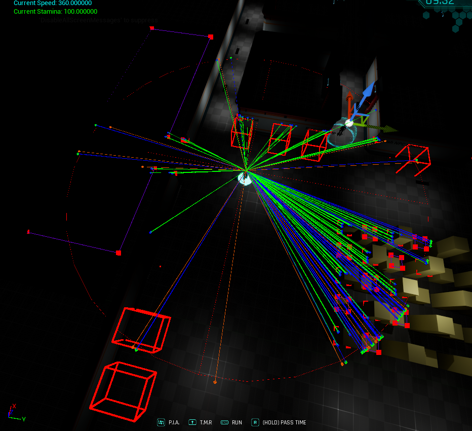
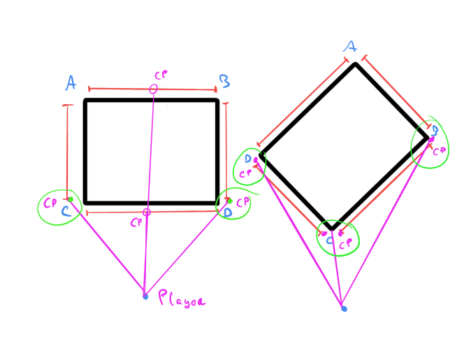
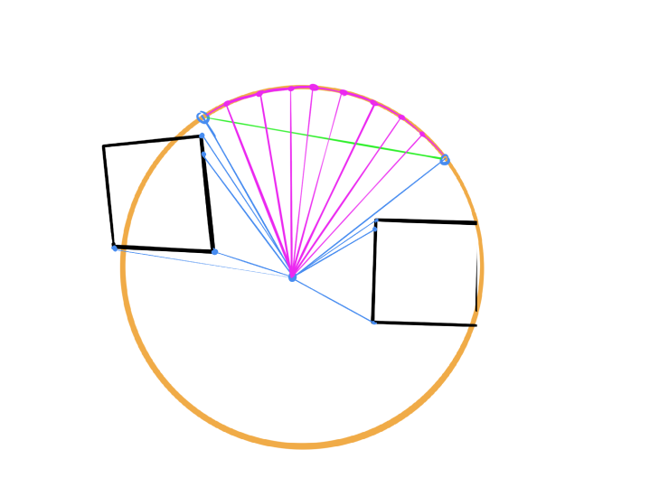
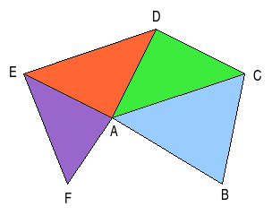
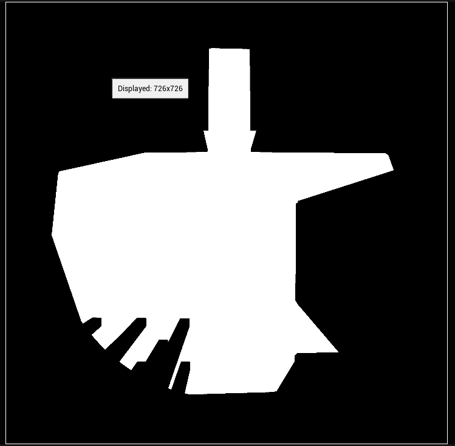

Camera

The main features of the camera are three, how is the target point that the camera follows calculated, how does it deal with walls and doors and how is the final result put all together. For better understanding of the camera, debug drawings were added.
Target point
The target point is the point which the camera will be following all the time. This target point is a bit rought for movement so to smooth it up the real target point is calculated by interpolating the previous target point and the desired target point at that frame.
NO LOOK AHEAD: By default, with the look-ahead distances set to zero, the camera will focus on the character's position.

FIXED LOOK AHEAD: the camera will focus in a point determined by the static look ahead distance in the forward direction of the player.

DYNAMIC LOOK AHEAD: will focus in a point ahead of him but the difference with the fixed look ahead is that the point is calculated with the current velocity so when the player moves the camera will move to the direction of the movement and when the player slows, the camera will focus back to the player.

Margins
To prevent the camera from showing to much of the environment, and having unwanted situations where the player could feel uncomfortable margins were added. This margins check collisions with walls to “lock” the movement fo the camera if this margins were overpassed.

These margins are reduced to three situations. firstly when one of the margins is colliding with a wall, when two opposite margins are colliding with a wall and when ther is a corner colliding. In all of the cases the idea is to compensate the distance that the margins penetrated with the space available so the camera stays as far of the wall as we request it with the margin distance.
-
One of the margins is colliding: When one of the
margins is colliding, what we want to do is push the camera in the opposite direction so the
margin respects its length, as shown in the gif below. If two margins of opposite axes
collide, it handles it the same way, as those margins don’t interfere with each other.


-
Both of the margins are colliding: when both of the
margins are colliding the target will be the average point between those points so the
camera will always stay centered.


-
No margin is colliding but there is a corner between:
when the character is near a corner, we need diagonal margins as the conventional axis
margins wont detect it. So by throwing diagonal rays the camera knows there is a corner and
will reposition the camera based on the projection of that diagonal ray over the Y and X
axis as seen on the illustration below.


DOORS: Finally to end with margins, the way to handle doors or open rooms where the camera shouldn’t reposition until the player enters the room is to place blocking volumes for the rays thrown, this way these doors will keep acting as walls as shown below. But this gives little control for the designers as they cant control how fast the camera transitions to the next room.
To solve this there are two factors to check, first if a margin is colliding with a door and the second one if the player is entering a room. To know if the player is colliding with a door with a line trace is enough, if the player is entering a room is a bit more complex. basically the idea is to check if the target point of the camera teleports (it has crossed a door) and if that happens then it is transitioning. Finally the transition finishes when the target point is close enough to the previous target point, when no margins are colliding or when there isn’t any margin colliding with a door.

Smooth movement
With the previous points there is a consistent target point but just sticking to the point will lead to a rigid camera, that's why the camera is interpolated from its actual position to the target position which would be the desired camera position.
Line of Sight

The line of sight is a visual effect that essentially hides everything the player cannot see from their point of view. Its implementation is composed of various elements: obstacles, collision data retrieval, rendering information onto a render target, and finally, displaying the effect in the world through a post-process material.
Obstacles
Obstacles are essentially a class that inherits from Unreal volumes. These obstacles contain four points, representing the four corners of the volume (this system is currently limited to rectangular-shaped obstacles). They are set to receive collisions only on the line of sight channel, so they don’t interfere with anything else.
Collision data retrieval
Once the obstacles are set, it’s time to gather information from the player’s position. This is done by casting rays to the visible corners of the obstacles around the player. The line of sight has a limited range, so any obstacles outside this range are excluded from data collection.
As shown in the picture above, rays are cast only at obstacles. The idea is to cast three rays per corner: one directed at the corner itself, and two to the sides. This approach helps identify whether there is empty space or additional obstacles.
Since at least one of the vertices is always hidden, the number of rays needed is reduced. When a ray doesn’t hit anything, it indicates empty space. This space is then filled with imaginary points at a fixed interval, simulating an invisible wall.
Rendering information onto a render target
Now that the information is stored, the points are initially unordered. The next step is to arrange these points by their angle relative to the player, making it easier to represent. The simplest way to represent this collected data is by constructing a fan triangle mesh, a mesh made up of triangles that all share a single vertex. This process converts the raw data into triangles that can be rendered on a render canvas.
After some transformations this is the final result.
Collision data retrieval
The final step is to create a post-process material that applies the effect to the screen. I achieved this by following a tutorial, making a few adjustments to fit my implementation.
Post process tutorialWall occlusion

The goal of this mechanic is to always keep the player visible. The implementation is fairly simple: the idea is to calculate the distance to the wall, represented as a segment. Based on a minimum and maximum distance from the player to the wall, a value between 0 and 1 is generated. This value is then passed to the wall’s material (which must be masked) and applied with dithering or a similar effect.
Light system
Because Myrmica's station is a dynamic place, the lights needed to change at certain moments. Since it has many lights, I created a lighting system structured with a controller and various light zones, which include special lights as well as emissive meshes.

It has two functions: first, to optimize performance by turning off lights that are not visible, and second, to control normal and emergency lights by turning them on and off as needed.
As shown below, these light zones are volumes connected to neighboring zones. The idea is to keep lights on only in the zone closest to the player and its neighboring zones.